ELETRÔNICA:
RESISTORES
Existem diferentes componentes elétricos usados na eletrônica, talvez o componente mais comum se chama resistor.
Resistores transformam energia elétrica em energia térmica, assim, diminuindo a tensão em alguma parte do circuito, eles são fundamentais pois impedem componentes de queimarem por exemplo por causa da alta tensão.
Físicamente resistores podem ser medidos através da Lei de Ohm:
\[V = RI \Rightarrow R = \frac{V}{R} \text{ } \left[ \frac{V}{\Omega} \right] \]
Em um componente real existem algumas linhas coloridas pintadas na sua superficie da cerâmica, essas linhas são uma forma de indentificar sua resistência de forma padronizada sem a necessidade de medir em um multímetro toda hora, sendo a combinação das cores, um código para um valor de resistência. Você pode usar uma calculadora online como esta para verificar.

Eletronicamente eles são representados pelas seguintes notações:
Ambas as notações significam a mesma coisa, neste caso, ambas podem ser interpretadas como um resistor de \( 5 \text{ } k\Omega \). Sendo uma das notações o padrão estadunidense e a outra o padrão IEC respectivamente.
Existem outros tipos de resistores, como por exemplo os resistores variáveis, tal como os potenciômetros, mas isso será discutido numa próxima nota separadamente.
Múltiplos resistores também podem ser combinados eletronicamente formando associações em série ou paralelo. Por exemplo:
| Resistência em Série | Resistência em Paralelo |
|---|---|
|  |
A resistência total pode ser obtida através da Resistência Equivalente, tal como a seguir:
| Resistência Equivalente para Resistência em Série | Resistência Equivalente para Resistência em Paralelo |
|---|---|
| \[R_{eq} = R_1 + R_2 + R_n \] | \[ \frac{1}{R_{eq}} = \frac{1}{R_1} + \frac{1}{R_2} + \frac{1}{R_n} \] |
Por fim, para que um resistor seja ligado em uma Protoboard real, basta que ele receba uma fonte de tensão. É importante notar que alguns componentes possuem o que é chamado de polaridade, mas isto será discutido posteriormente, já que resistores não possuem...
REFERÊNCIAS
[1] Forrest M. Mims III. "Getting Started With Electronics".